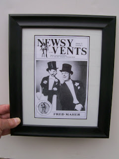

Historic Maher Memories
5/26/2011
{kind=link}

It was Dave Robison who was going through some of his old documents and came across his 1980 issue of Newsy Vents that featured Fred Maher with his original Skinney Dugan on the cover. Dave suggested I frame a copy of that cover to use as a give away. Great idea, Dave, and today I'm doing just that.
I'll also include a copy from that issue of the three page article with photos detailing the history of the NAAV (North American Association of Ventriloquists) which was celebrating its 40th year anniversary that year. The article also details the moving of Maher School of Ventriloquism from Detroit to Littleton. Although I was fully involved in that 1969 move, I had forgotten some of the details so even I found my account of the transfer fascinating to reread now 31 years later.
The winner of this framed historic Newsy Vents cover shown here is Reford Theobold. I made up a couple extra framed covers as well, so if you would like to own one of these rare pieces (frame style may vary), the price is $20.00 (free shipping US).